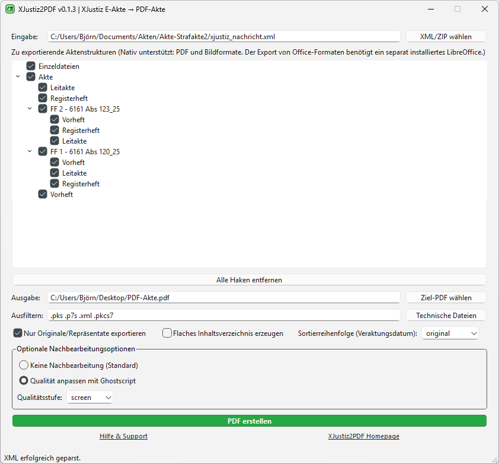

XJustiz2PDF
XJustiz2PDF wandelt XJustiz‑Nachrichten (ERV) und elektronische Akten (E‑Akte) in eine einzelne, strukturierte PDF‑Akte um. Die erzeugte PDF enthält ein Inhaltsverzeichnis, das die Originalstruktur der Akte abbildet. Zielgruppe sind Anwender:innen und Entwickler:innen, die mit E-Akten arbeiten, diese archivieren oder weiterverteilen müssen.
Plattformen: Windows, Linux, macOS. Native PDF- und Bildkonvertierung; optionale Erweiterungen für Office‑Formate und PDF‑Optimierung über LibreOffice und Ghostscript.
Als Alternative zur PDF-Umwandlung mit XJustiz2PDF empfehle ich den XJustiz-Viewer openXJV.
Funktionen ✨
- Strukturtreue PDF‑Akte mit Inhaltsverzeichnis/Bookmarks entsprechend der Aktenbaumstruktur
- GUI mit Baumansicht zur gezielten Auswahl von Aktenstrukturen.
- Filter‑Mechanismus (Leerzeichen‑getrennte) Stichworte zum gezielten Ausschluss von Dokumenten (z. B. "Signatur")
- Sortieroptionen – Originalreihenfolge, aufsteigend oder absteigend nach Veraktungsdatum
- Platzhalterseiten für nicht unterstützte oder fehlende Dateien
- Optionale Nachbearbeitung via Ghostscript: Qualitätsprofile (screen → ebook → printer → prepress) zur Dateigrößen‑/Qualitätssteuerung
- Office‑Konvertierung (wenn LibreOffice installiert): Wandelt Office‑Formate in PDF, damit sie in die Akte integriert werden können
- Robuste Fehlerbehandlung und informative Statusanzeigen während des Exports
Installation 🔧
Windows‑Installer
Download: hier klicken oder GitHub Releases
Wichtig: Die zusätzliche Installation von LibreOffice ist optional, erweitert die Anwendung jedoch um die Möglichkeit, Office‑Formate in PDFs zu konvertieren, so dass sie in die PDF‑Akte übernommen werden können. Auch eine separate Installation von Ghostscript ist optional, ermöglicht jedoch die nachträgliche Größenreduktion und Qualitätssteuerung der erzeugten PDF‑Akte mittels definierter Profile.
PyPI (empfohlen für Linux und macOS)
pip install xjustiz2pdfStart
python -m xjustiz2pdf
# oder
xjustiz2pdf
Die Hinweise zu LibreOffice und Ghostscript gelten auch für Installationen ohne Windows‑Installer: LibreOffice macht Office‑Dokumente konvertierbar; Ghostscript bietet zusätzliche Optionen zur Qualitätsanpassung und Größenreduktion der finalen PDF‑Akte.
Hauptfenster und Bedienung 🖥️
Das Hauptfenster ist in funktionale Bereiche unterteilt. Nachfolgend werden die Bedienelemente und ihre Auswirkungen beschrieben, damit du den Export kontrolliert und reproduzierbar durchführst.

Eingabe
Wähle eine XML‑Datei oder eine ZIP‑Datei mit einer xjustiz_nachricht.xml in der obersten Ebene. Beim Laden wird die Aktenstruktur analysiert und in der Baumansicht abgebildet. ZIP‑Archive werden automatisch entpackt und verarbeitet; relative Pfade innerhalb der Akte bleiben erhalten.
Baumansicht
- Checkboxen: Haken setzen bedeutet: Elemente (Ordner oder Dokumente) werden in die PDF‑Akte übernommen.
- Teilweise Auswahl („-“): Erzeugt einen leeren Eintrag im Inhaltsverzeichnis, ohne die im markierten Eintrag enthaltenen Dokumente zu übernehmen.
- Reihenfolge: Die Struktur der xjustiz_nachricht.xml bestimmt die Standardreihenfolge. Wird eine andere Sortierung gewählt, so beeinflusst dies die Reihenfolge der Dokumente innerhalb der jeweiligen Ordner.
Alle Haken entfernen
Setzt alle Checkboxen zurück; praktisch für einen schnellen Neustart der Auswahl.
Ausgabe
Definiere den Zielpfad für die zu erzeugende PDF‑Akte. Ist kein gültiger Zielpfad gesetzt, bleibt die Schaltfläche PDF erzeugen deaktiviert.
Ausfiltern
Gib mit Leerzeichen getrennte Stichworte ein, die aus dem Export ausgeschlossen werden sollen (z. B. protokoll). Die Filterung wirkt als Ausschlussliste: getroffene Dokumenttitel werden nicht exportiert.
Technische Dateien
Ein Klick auf diesen Button füllt das Ausfiltern-Feld mit den typischen Dateiendungen technischer Dateien.
Optionen
- Nur Originale/Repräsentate exportieren — Wenn aktiviert, werden automatisch Dokumente ausgelassen, die nicht als Original oder Repräsentat gekennzeichnet sind (z. B. Signaturprotokolle oder Transfervermerke).
- Flaches Inhaltsverzeichnis — Ignoriert die Hierarchie und legt alle ausgewählten Dokumente als gleichrangige Einträge in das Inhaltsverzeichnis.
- Sortierung — Originalreihenfolge / aufsteigend / absteigend (nach Veraktungsdatum). Die Wahl beeinflusst die Reihenfolge im Inhaltsverzeichnis und damit die Lesbarkeit chronologisch oder strukturell.
Optionale Nachbearbeitung
Wenn Ghostscript vorhanden ist, wird eine Sektion zur Nachbearbeitung angezeigt. Die Profile wirken sich folgendermaßen aus:
- screen — starke Kompression, niedrige Qualität, sehr kleine Datei
- ebook — moderate Kompression, geeignet für Bildschirmnutzung
- printer — geringere Kompression, guter Kompromiss zwischen Qualität und Größe
- prepress — minimale Kompression, maximale Qualität, große Dateien
PDF erzeugen
Die Schaltfläche startet den Exportprozess. Sie wird aktiv und farblich hervorgehoben, sobald ein Eingabe‑ und Ausgabepfad gesetzt und mindestens ein Element ausgewählt ist. Der Fortschritt wird im Statusbereich angezeigt; Fehler oder fehlende Dateien werden als Hinweise protokolliert, und Platzhalterseiten ersetzen nicht verwertbare Dokumente.
Hilfe bei Problemen 🛠️
xjustiz2pdf versucht, den Exportprozess so robust wie möglich zu gestalten. Die folgenden Verhaltensweisen helfen bei der Einschätzung und Behebung von Problemen:
- Nicht‑PDF‑Dateien: Sofern möglich werden Bild‑ und Office‑Formate in PDF konvertiert. Für Office‑Formate ist LibreOffice erforderlich; ohne LibreOffice werden diese Dateien durch Platzhalterseiten ersetzt.
- Fehlende Dateien: Fehlende oder referenzierte Dateien werden durch eine Platzhalterseite mit erläuterndem Hinweis ersetzt, damit der Export nicht abbricht.
- Dokumente ohne Datum: Nicht alle Dokumente verfügen über ein Veraktungsdatum (z. B. Repräsentate reiner Systemdaten). Diese können leider nicht sinnvoll sortiert werden.
- Leere Auswahl / alles ausgefiltert: Führt zu einer PDF mit einer einzelnen Informationsseite (Sinngemäß :„Keine Dokumente ausgewählt“).
- Fehler bei Office‑Konvertierung: Prüfe, ob LibreOffice installiert und im Systempfad erreichbar ist.
- Ghostscript‑Fehler: Wenn die nachträgliche Nachbearbeitung fehlschlägt, deaktiviere vorübergehend die Nachbearbeitung, um den Export selbst zu testen.
Tipps 📝
Empfohlene Vorgehensweisen, um verlässliche, reproduzierbare PDF‑Akte‑Exporte zu erzielen:
- Originalakte archivieren: Bewahre die Originaldateien stets separat auf — die konvertierten PDFs sind nicht identisch mit den Originalen und können Informationsverluste (z. B. interne Inhaltsverzeichnisse, Metadaten, Bildqualität) aufweisen.
- Filter bewusst einsetzen: Verwende die Ausfilter‑Funktion, um wiederkehrende, unerwünschte Dokumente (z. B. Signaturprotokolle) sicher auszuschließen.
- Teilweise Auswahl für Struktur: Nutze die teilweise Auswahl („-“), wenn die Ordnerstruktur im Inhaltsverzeichnis erhalten bleiben, die in den Unterordnern enthaltenen Dokumente aber nicht exportiert werden sollen.
- Ghostscript gezielt einsetzen: Für Archivzwecke empfiehlt sich ein höherer Qualitätsmodus (printer oder prepress). Für schnelle Durchsichten oder Weitergabe sind screen/ebook geeigneter.
- LibreOffice für Office‑Formate: Wenn Akten Office‑Dokumente enthalten und deren Inhalte in der PDF‑Akte benötigt werden, installiere LibreOffice auf dem System, damit diese Formate zuverlässig konvertiert werden.
Nützliche Links 🔗
Lizenz 📄
xjustiz2pdf ist Open Source und steht unter der GPLv3-Lizenz. Beiträge, Fehlerberichte und Pull‑Requests sind auf dem GitHub‑Repository willkommen.